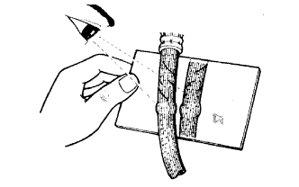

BRAKE > GENERAL MAINTENANCE |
| 1. INSPECT BRAKE LINE PIPES AND HOSES |
|  |
Using a mirror, check the entire circumference and length of the brake lines and hoses for:
Check all the clamps for tightness and the connections for leakage.
Check that the hoses and lines are not near sharp edges, moving parts or the exhaust system.
Check that the lines are installed properly and pass through the center of the grommets.
| 2. INSPECT BRAKE LININGS, DRUMS, PADS AND DISCS |
Check the brake linings and drums of the parking brake.
Check the brake pads and discs.
| Type | See Procedure |
| Front |
Click here
|
| Rear |
Click here
|
| 3. INSPECT BRAKE FLUID |
Inspect the brake fluid (Click here).
| 4. REPLACE BRAKE FLUID |
Replace the brake fluid (Click here).